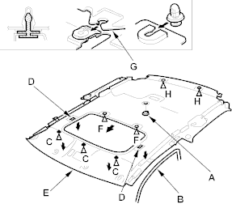
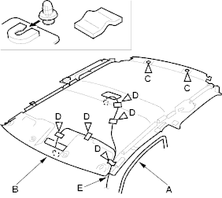

- Remove the headliner.
With sunroof:
- Remove the socket plug (A).
- Remove the remaining door opening trim (B) from each roof portion.
- Detach the clips (C) and release the fasteners (D) by pulling the front portion of the headliner (E) down.
- With the help of an assistant, release the clips (F) of the headliner from the sunroof frame (G) and release the headliner from the clips (H) by sliding the headliner forward and lowering the headliner.
- Remove the headliner through the tailgate opening.
Fastener Locations
C  : Clip, 3 F : Clip, 2 H : Clip, 2
: Clip, 3 F : Clip, 2 H : Clip, 2

- Remove the headliner.
Without sunroof:
- Remove the remaining door opening trim (A) from each roof portion.
- With the help of an assistant, release the headliner (B) from the clips (C) by sliding the headliner forward and lowering the headliner.
- Remove the cushion tape (D), then remove the roof harness (E) from the headliner.
- Remove the headliner through the tailgate opening.
Fastener Locations
C : Clip, 2 D : Cushion tape, 5

- Install the headliner in the reverse order of removal and note these items:
- When reinstalling the headliner through the door opening, be careful not to fold or bend it. Also, be careful not to scratch the body.
- Check that both sides of the headliner are securely attached to the trim.
- If the threads on the grab handle mounting self-tapping ET screws are worn out, use on oversized self-tapping ET screw made specifically for this application.